Lock and Condition Variables
Contents
Lock and Condition Variables#
1. Recall the problem from intro-to-os#

Two concurrent threads manipulated a shared resource (the counter variable) without any synchronization.
Outcome depends on the order in which accesses take place – this is called a race condition.
We need to ensure that only one thread at a time can manipulate the shared resource so that we can reason about program behavior, in a sane way
We need synchronization.
2. What is shared/not shared in a multithreaded program?#

3. Key definitions#
A critical section (CS) is a segment of code that accesses a shared resource, usually a variable or data structure.
A race condition (data race) arises if multiple threads of execution enter the critical section at roughly the same time; both attempt to update the shared data structure, leading to a surprising and undesirable outcome.
An indeterminate program consists of one or more race conditions. The outcome is thus not deterministic.
To avoid these problem, threads should use some kind of mutual exclusion primitives. Doing so guarantees that only a single thread ever enters a critical section, thus avoiding races and resulting in deterministic program outputs.
4. Requirements for Critical Section Handling#
Mutual Exclusion: if one thread is in the CS, then no other isProgress: threads waiting for access to CS are not prevented from entering by threads not in the CS; threads do not wait indefinitely.Bounded Waiting(no starvation): all waiting threads are guaranteed to eventually get access to the CS.Performance: The overhead of entering and exiting the CS is small compared to the work done within it.
5. Lock: Definition#
Atomic instruction: A machine instruction that can be executed in a single clock cycle.Programmers annotate source code with locks around a critical section, ensuring that it behaves like a single atomic instruction.
What is a lock?
Is declared as a lock variable.
The lock variable holds the state of the lock.
The states are either:
Available (unlocked or free): No thread holds the lock
Acquired (locked or held): Exactly one thread holds the lock and presumably is in a critical section.
The lock variable can also hold additional information (often hidden from users):
Which thread is holding the lock
A queue for ordering lock acquisition …
6. Semantic of locking: lock() and unlock()#
A thread calls
lock()when it tries to acquire the lock:If no other thread is holding the lock, the thread will acquire the lock and enter the critical section (becomes owner of the lock).
If another thread is holding the lock, the call will not return.
Once the lock owner is finished, it calls unlock() and the lock becomes available.
If there is no waiting thread, the lock becomes free.
If there are some waiting threads, one of them will acquire the lock and enter the critical section.
Lock in
pthread: https://linux.die.net/man/3/pthread_mutex_lock
7. How do we build a lock?#
How do we build an efficient lock?
What hardware support is needed?
What OS support is needed?
8. Criteria of a good lock#
Mutual exclusion
Fairness
Performance
9. First attempt: controlling interrupts#
One of the earliest solutions for single processor systems.
lock()will disable interrupts.unlock()will enable interrupts.
Advantages
Simplicity
Disadvantages
Allow user programs to perform privileged operations
Disable interrupts carries significant implication in preventing OS from performing interventions.
Do not work on multi-processors (since another thread can still enter the critical section via different computing core).
Prevent non-locking interrupts to take place. For example, disk I/O interrupts.
Inefficient. It is difficult to implement code that mask/unmask interrupts.
10. We need CPU hardware support#
Simple principle: Load and Store a lock flag
Correctness:
Interrupts can still lead to inconsistency issues
Performance:
The waiting threads need to keep checking the condition of the flag (spin-waiting)
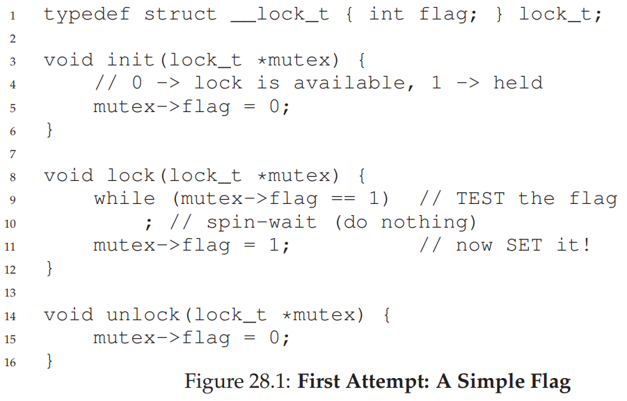
11. Spin lock with Test-and-Set#
Hardware support for locking begins in early 1960.
TestAndSet can be performed atomically by hardware.
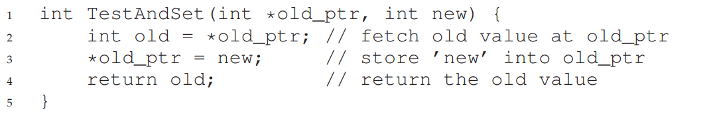 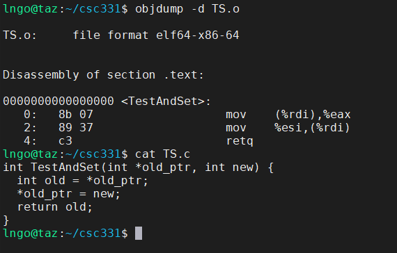
12. Spin lock with Test-and-Set: how does it work?#
Lock is free:
flag is 0
TestAndSet returns the old value of flag (break the loop) but also set the value of the flag (acquire the lock).
Lock is not free:
flag is 1
TestAndSet keeps setting the lock but also spinning inside the while loop until the lock is released.
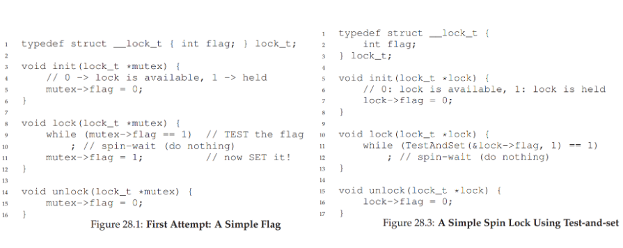
13. Evaluating the basic spin lock#
Correctness: Yes
Fairness: No - can lead to starvation
Performance:
TestAndSet requires CPU cycle (even as an atomic operation)
14. Scenario: one thread waiting on another#
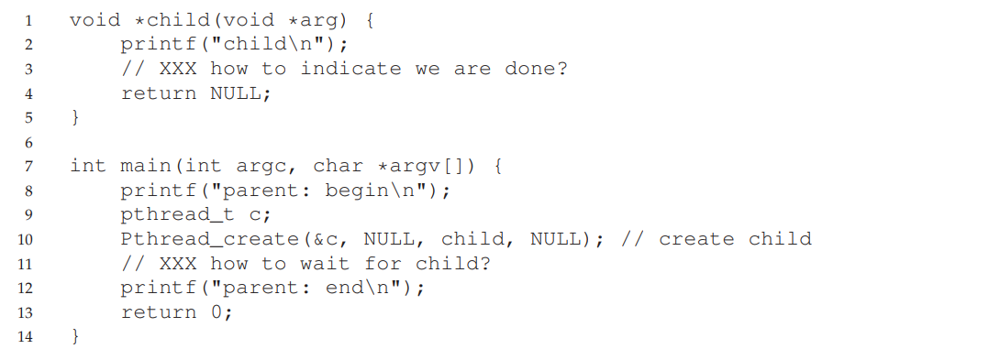
15. A lock-based solution#
How to implement a lock-based solution?
What is the issue?
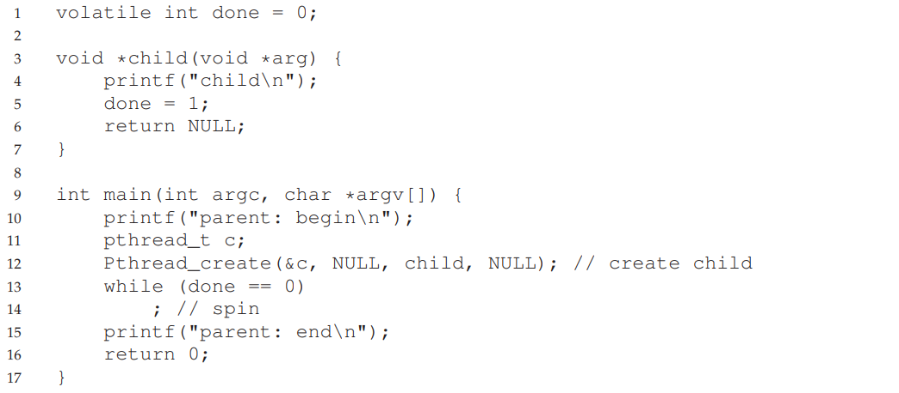
16. How to wait for a condition?#
Condition Variable: an explicit queue that threads can put themselves on when some state of execution (condition) is not as desired (waiting on the condition).
When the state is changed, the condition variable can wake up one (or more) of the waiting threads to continue.
17. Lock and conditional variable#
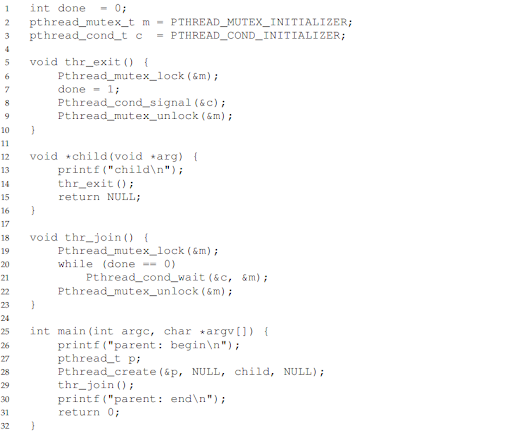
18. Do we really need both?#
Infinite sleep for parent thread.
Why?
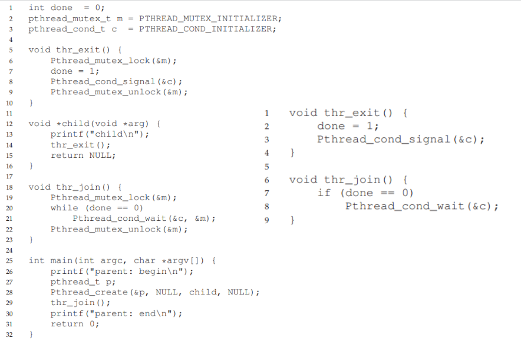
19. The producer/consumer (bounded buffer) problem#
Proposed in 1972 by Edsger W. Dijkstra
Imagine one or more producer threads and one or more consumer threads.
Producers generate data items and place them in a buffer;
Consumers grab said items from the buffer and consume them in some way.
Occurs in many real systems
Multi-threaded web servers
Linux pipe
Generalization: many producers/consumers running concurrently.
Requirement:
Only place data in buffer when count is 0 (available space on buffer)
Only grab data from buffer when count is 1 (buffer is full)
20. Vanilla: not thread-safe#
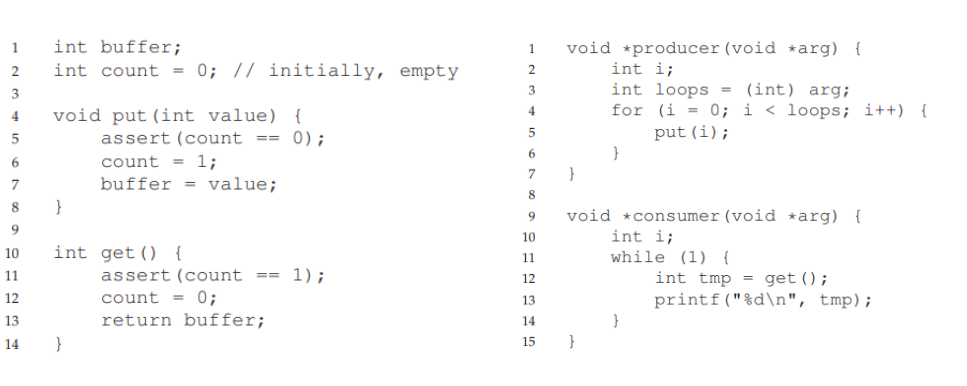
21. First implementation#
Start with 1 CV and 1 lock.
Work with 1 producer and 1 consumer.
What happens if we have more consumers?
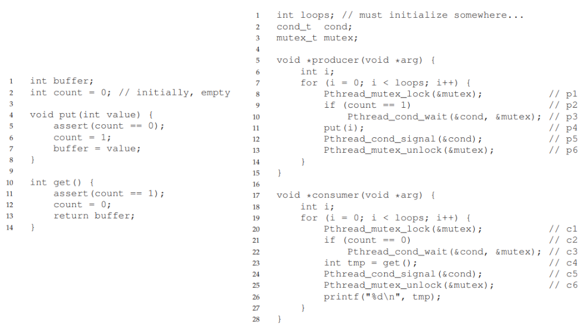
22. First implementation: broken#
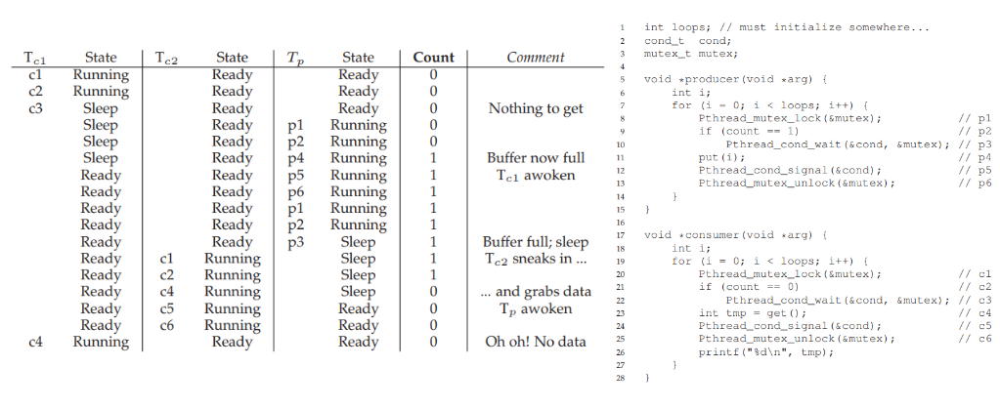
23. First implementation: why?#
After the producer wakes a consumer, the state of bound buffer changed for the consumer due to the other consumer.
Signaling a state only wakes them up (implying a state changes) but does not guarantee maintaining a desired state.
This is called Mesa semantics
“Experience with Processes and Monitors in Mesa” by B.W. Lampson, D.R. Redell. Communications of the ACM. 23:2, pages 105-117, February 1980
Virtually all computing systems are built using Mesa semantics.
Hoare semantics
Stronger guarantee that the woken thread will run immediately upon being woken.
24. Second implementation: slightly less broken#
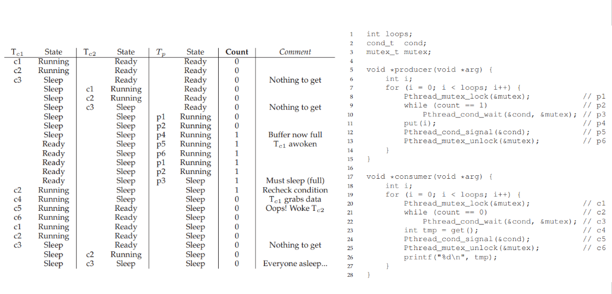
25. Third implementation: finally work#
Consumer only wake producer and vice versa
Two condition variables are needed.
Not yet generalized.
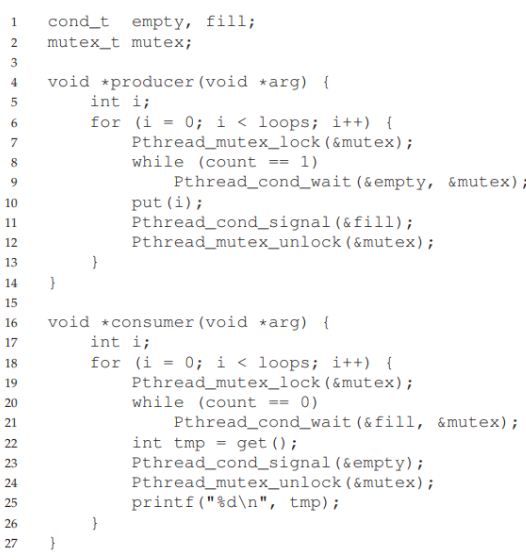
26. A generalized solution#
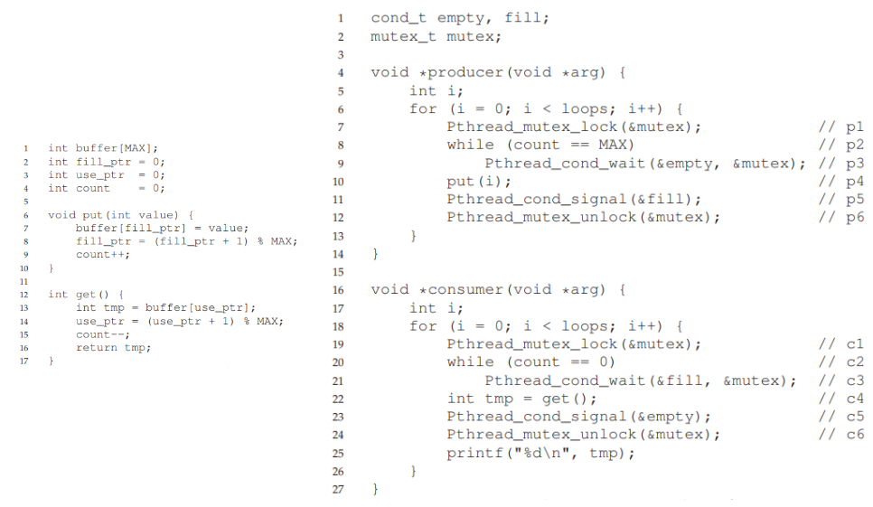